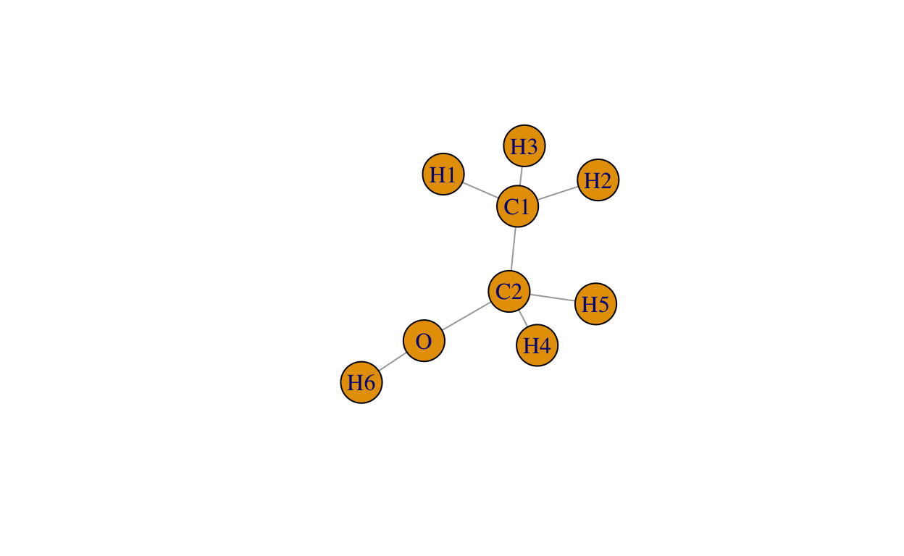

This tutorial gives an interactive introduction to network analysis (also called graph analysis) in R using the igraph package. It assumes you are already comfortable using R. It does not, however, assume you are an R wizard. I gave serious thought to using the tidyverse-adjacent tidygraph and ggraph packages, but settled on igraph mostly due to familiarity.
We will start by talking a little about what networks are, what they can be used for, and when a normal, tabular dataset is a better choice. After that we will try creating our own networks, analyzing them, and draw some conclusions from the data.
Throughout the tutorial, there are blocks of code that you can run yourself. Sometimes they are assignments with pieces of code for you to fill in. Those pieces are marked by four dots (....). Other times, there are no missing pieces, and you can run the code and see the output without doing anything. Don’t be afraid to change the code, run it again, and see what happens.
I am a big fan of the tidyverse packages, especially for teaching, and I strongly considered using the tidyverse-adjacent tidygraph package for this. In the end I decided on using the igraph library mostly because of familiarity. Still I encourage you to try tidygraph and the ggraph visualization library - they are both newer than igraph and have not accumulated the same number of questions on stackoverflow as igraph, but they represent an interesting approach to networks. For now we will focus on igraph, and if in the end you want to learn more, check out the igraph documentation at https://igraph.org/r/#docs.
Everybody has an intuitive understanding of what networks are - we are surrounded by them. The internet is a network (it’s right there in the name), our friends, be it on social media and in real life are networks, and the road system is a network. And Google bevcame Google by treating all the links around the internet as a network.
While a lot can be seen as network (it’s all a matter of perspective), we need to know when it is useful to see something as a network. We will explore this quesiton through the tutorial, but for now a good rule of thumb is to start thinking in terms of networks when you start wondering about “friends of friends” or websites that link to other websites that link to your own website.
Despite the intuitive understanding of what a network is, network analysis brings with it a lot of new words. We have already mentioned that networks often are called graphs - which confusingly have nothing to do with visualization. A graph consists of “nodes” (which are sometimes called Verticies) and “edges” (which thankfully doesnt have any other names).
Running the code below automatically generates a network. Try running it multiple times, and you’ll see that the network generated changes a little each time.
plot(sample_smallworld(1, 12, 2, 0.03), vertex.size=25)The network below consists of 12 nodes (the yellow circles), with a total of 24 edges (lines) connecting them.
Networks can be cool to look at, but for many of us the real-world networks we want to analyze is way to large to visualize in any meaningful way. Instead, we have to use more abstract concepts to describe the network. Just from looking carefully at the graph above, we can makes some observations:
Caalculating these measures by hand is a pain, and our graph library tidygraph includes a lot of functions for calculating these and other measures.
Tidygraph can create a wide number of example graphs for you to play with, but most likely you want to load your own data to analyze. Some of the smallest non-fictitious graphs that exists are molecules. Molecules are sets of atoms, where each atom is connected to one or more molecules. In our first example, we will create a graph of the ethanol molecule. An ethanol molecule consists of six hydrogen atoms, two carbon atoms, and one oxygen atom. We will give the nodes names accordingly, Denoting the hydrogen atoms H1 to H6, and the carbon atoms C1 and C2. The solitary oxygen atom will be named O.
In order to create a graph, it is common to start with a so-called node- and edgelist. The nodelist is simply a list of all the nodes, and the edge list is a list of all the edges.
The nodelist is simply a vector of node names, while the edgelist is a dataframe with two columns: from and to. The function graph_from_data_frame takes the edgelist as an argument, and optionally also a nodelist. The second argument, directed, is a topic for a later chapter.
We can visualize the graph very easily, using the built-in plot function. Later we will also see how to plot a graph using a ggplot-like library called ggraph.

As anyone even remotely interested in chemistry will tell you, the layout of the graph is wrong. There are strict rules for how atoms can be positioned relative to each other in a molecule, and our plot simply ignores all these rules (because R doesnt know the rules, and doesn’t even know that this is supposed to be a molecule). But the network itself is a true representation of an ethanol molecule.
Using this, we can calculate some of the things we calculated by hand in the example above. We use the degree function to find the number of edges connected to each node. The result of degree is a simlpe vector of numbers, from which we can find the average, max or min degree.
## [1] 1.777778We can also find the density of the ethanol molecule simply by using the edge_density function.
## [1] 0.2222222The ethanol molecule has a density of 0.22, meaning that 22% of all possible connections are made. Possible in this case is from a graph perspective, once again a chemist might have something to say about what is possible from a chemistry standpoint. But the density still has an interpretation in chemistry, giving an indication of how the molecule might react to heat and pressure.
So far, the measures we have made could easily have been calculated using simply the edgelist. A feature of the graph that is not easy to compute though, is the centrality (betweenness) of the graph. Betweenness is roughly the number of times a given node is on the shortest path between two randomly chosen other nodes. In socal networks, nodes (persons) with a high centrality might be bridge-builders between different groups, or on the road network, an intersection (which is a node) with high centrality is likely heavily trafficed because a lot of people want to travel through it to get where they are going.
## H1 H2 H3 H4 H5 H6 C1 C2 O
## 0 0 0 0 0 0 18 21 7Creating a graph very simple once you get the hang of creating the node- and edgelists. Try finding a network of your own, or if you’re stuck google for images of “Propylene” and create a network from by filling in the dots below. Use the built-in functions to find the density and degree of the network, and finish by visualizing it.
nodelist <- c(....)
edgelist <- data.frame(from=c(....), to=c(....))
my_graph <- graph_from_data_frame(...., directed=FALSE, vertices = ....)
# Density of the network
edge_density(....)
# Degree of each node in the network
....(my_network)
# visualize the network
....nodelist <- c("H1", "H2", "H3" ,"H4", "H5", "H6", "C1", "C2", "C3")
edgelist <- data.frame(from = c("H1", "H2", "C1", "C2", "C2", "C3", "C3", "C3"),
to = c("C1", "C1", "C2", "H3", "C3", "H4", "H5", "H6")
)
my_graph <- graph_from_data_frame(edgelist, directed=FALSE, vertices = nodelist)
# Density of the network
edge_density(my_graph)
# Degree of each node in the network
degree(my_graph)
# visualize the network
plot(my_graph, vertex.size=35)Graphs so small that they can be drawn by hand is hardly any fun - now that we know how to construct graphs from node- and edgelists, and made our first calculations, we can create a larger graph and get a better understanding for what network analysis can do.
We will analyze a famous dataset created from a collection of emails sent in the american company Enron before it suddenly went bankrupt in early 2002. The original dataset contains full emails, but the network we use consists simplpy of nodes and edges without any names or other information.
This network is quite large, consisting of 367662 edges and 36692 nodes.
We don’t know much about the network, but we can start by postulating a few theories about the data, that we can check.
The network is already loaded to a variable called enron. Finding the density of the network should be familiar by now:
....(enron)grade_result(
pass_if(~ identical(.result, edge_density(enron)), "Good job!")
)edge_density(enron)The density is below 0.0003, significantly less than the 0.22 we found in the ethanol molecule.
The degree function returns the degree for each node, and by checking for numbers less than 5 we get a vector that is true for nodes with a degree under five and false for others. Since true evaluates to 1 and false to 0, we can simply take the sum to find the number of nodes of degree less than five.
## [1] 15011Out of the more than 36 000 nodes, 15 000, or 40% of the nodes are connected to less than five edges - meaning they exchange emails with less than five people. This seems low and suggests that the emails are from a very short time period, but for now we are satisfied being able to interpret our results in terms of the subject matter. To calculate the exact share of the network these nodes constitute, we simply divide the number by the number of total nodes - we can do that simply by taking the length of the vector.
sum(degrees_lt_5)/length(degrees_lt_5)Let’s try visualizing the degree distribution using a histogram. In order to keep things simple, we’ll start by using the built-in hist-function. The ggplot2 package could help us make a better-looking plot, but ggplot2 needs a dataframe which we don’t have right now.
This was underwhelming, but you have probably seen plots like this before. What we can conclude is that a very large share of the nodes are of a relatively low degree, while a tiny fraction have a very high degree. This pattern is not uncommon for many types of networks, and because this is a network of emails in a company we suspect that these extremely connected nodes are high-level managers who send emails to whole departments within the company.
We will explore this more in the next chapter, but for now you can try to create a somewhat more readable graph by using logarithms.
enron_node_degrees <- degree(enron)
....enron_node_degrees <- degree(enron)
hist(log10(enron_node_degrees))In the first graph we created with the graph_from_data_frame function, we used an extra argument directed="FALSE". Now that we are analyzing emails, it is natural to explore this further. Networks can be either directed or undirected. Directed networks treats edges as going from one node to another node, while undirected networks only records that there exists a link between two nodes.
Emails are directed: they are sent by one person, and recieved by another. Your group of friends is usually not directed - being friends is considered to be inherently mutual. Twitter is a directed graph: Users follow other users, but you can follow someone without them following you back.
Facebook and Linkedin are often seen as undirected networks, but it is possible to see it as a directed graph by saying that edges go from the sender of the friend request to the reciever of the friend request (the person who accepted the request). Wether of not this is a useful dististinction is up to you as the analyst to decide.
Directed networks also allow for there to be two edges between two nodes, one in each direction. This is the case for, say, two people on twitter who follow each other.
Wether the network is directed or not, can influence our measures. When we looked at degrees in the previous chapter, the degree function by default ignored the directionality, counting all edges wether going in to or out from the node.
We can change this using the optional mode argument to the degree function. Because we suspected that the higly connected nodes were because of mass emails, we suspect that the degree of ingoing edges do not follow such an extreme distribution.
This was still underwhelming, and frankly suspicious. The distribution still follows the same shape, and the max is now somewhere around 1400, as opposed to somewhere north of 2500 for the undirected network. This warrants investigation. Can you find the max degree for each of mode="in", mode="out" and mode="all"? mode="all" is the default, som you don’t actually have to specify that. Finish by taking the max of one of them.
enron_node_in <- ....
enron_node_out <- ....
enron_node_all <- ....
....enron_node_in <- degree(enron, mode="in")
enron_node_out <- degree(enron, mode="out")
enron_node_all <- degree(enron, mode="all")
grade_result(
pass_if(~ identical(.result, max(enron_node_in) ) | identical(.result, max(enron_node_out)) | identical(.result, max(enron_node_all)), "That's right!")
)enron_node_in <- degree(enron, mode="in")
enron_node_out <- degree(enron, mode="out")
enron_node_all <- degree(enron, mode="all")
max(enron_node_in)Max degrees are the same for both in and out, which is again exactly half of the max of all degrees. This can’t be right - the most likely explanation is that this network somehow contains one edge in each direction for every email sent. If this is the case, we will have to either limit our analysis to questions that doesn’t require a directed network, or we have to find a better source of data.
But first, let’s double check our hypothesis. If every email creates two edges, no nodes should be of an odd number of degrees.
all_degrees <- degree(enron)
odd_degrees <- all_degrees %% 2 == 1
sum(odd_degrees)## [1] 0Not a single edge has an odd number of degrees. How does this affect our previous conclusions?
We have gotten a hold of a better dataset, which contains the actual directions of the emails, and created a dataframe called mail_edgelist. Now, we have to repeat the analysis on this new, corrected data. If you take a look at the dataframe, you’ll notice that it does not only contain to and from columns, it also contains a weight column which indicates how many emails were sent from the sender to the recipient. The graph_from_data_frame function assumes that the two first columns in the dataframe are the nodes the edge is connected to, any further columns are seen as edge attributes which we can reference when doing calculations. We will come back to edge weights, for now we will do our analysis based on edges alone. While we are at it, let’s check that the number of edges is the same as the number of rows in the edgelist.
mail <- ....(mail_edgelist)
.... == ....mail <- graph_from_data_frame(mail_edgelist)
length(E(mail)) == nrow(mail_edgelist)You might notice that the number of edges and nodes in this dataset is different from the number of edges and nodes in the previous dataset. This has nothing to do with networks, and everything to do with the details of how the edgelist was assembled from the raw emails - relatively small differences stemming from details in data preparation are quite common. One example of this, is that the new enron dataset ignores the CC and BCC fields. The previous dataset does not specify how these fields were treated. Another choice that was made when creating this data, was to create one edge for each recipient in an email - since there can be several recipients in an email.
We start by finding the number of nodes and edges in this new network. You can get a list of all the edges in a network using the E() function, and a list of all the nodes (vertices) using the V() function. Both functions take the network as argument. To find the number of edges and nodes, simply find the length of each list using the length function.
First, the number of edges:
....
n_edges <- length(....)
n_edgesgrade_result(
pass_if(~ identical(.result, length(E(mail))), "That's right!")
)all_edges <- E(mail)
n_edges <- length(all_edges)
n_edgesBecause of the weighting mentioned, this is not the number of emails sent but the number of unique sender->reciever combinations found. In order to find the number of emails, we need to sum the weights. We can do this either directly from the dataframe, or, if we want to be fancy, we can access the weight attribute from the network like this:
## [1] 734286Similarly, nodes can have attributes. These are created when specifying a nodelist when creating a network. The first column in the nodelist dataframe is assumed to be the node IDs, subsequent columns are treated as node attributes.
Then, do the same for the number of nodes:
....
n_nodes <- length(....)
n_nodesgrade_result(
pass_if(~ identical(.result, length(V(mail))), "That's right!")
)all_nodes <- V(mail)
n_nodes <- length(all_nodes)
n_nodesOver 35 000 nodes, this is a really big company, and means that the average employee sent around 20 emails in this time period. But we do send a lot of emails in offices, even as early as in 2000, this leads us to suspect that these emails were from a very short time window. If we really wanted, to know, we could surely google it.
We are already very used to finding the density:
....grade_result(
pass_if(~ identical(.result, edge_density(mail)), "Good job!")
)edge_density(mail)As expected, this is an even lower density than we found previously, because we don’t include the “double” edges.
So, let’s get to where we stopped last time: Edge degrees. Find edge degrees for both in, out and all, and show the max of one of them
enron_node_in <- ....
enron_node_out <- ....
enron_node_all <- ....
....grade_result(
pass_if(~ identical(.result, max(degree(mail, mode="in"))) | identical(.result, max(degree(mail, mode="out"))) | identical(.result, max(degree(mail, mode="all"))), "Good job!")
)enron_node_in <- degree(mail, mode="in")
enron_node_out <- degree(mail, mode="out")
enron_node_all <- degree(mail, mode="all")
max(enron_node_in)
# OR
max(enron_node_out)
# OR
max(enron_node_all)Excellent, the max degrees are different for in- and out. We did, after all, expect some leaders to have large out-degree and a significantly lower in-degree. Perhaps we can make some histograms of this.
enron_node_in_degrees <- ....(mail, ....)
enron_node_out_degrees <- ....(mail, ....)
....(enron_node_in_degrees)
....(enron_node_out_degrees)enron_node_in_degrees <- degree(mail, mode="in")
enron_node_out_degrees <- degree(mail, mode="out")
hist(log10(enron_node_in_degrees))
hist(log10(enron_node_out_degrees))The out-degree has an even thinner tail than in-degree, meaning that most people email fewer people than they recieve emails from.
Before we move on to new and exciting topics, let’s find the number of nodes with a degree less than five like we did above - focus on the out-degree:
degrees_lt_5 <- ....
sum_degrees_lt_5 <- ....
number_of_edges_total <- ....
sum_degrees_lt_5/number_of_edges_totalgrade_result(
pass_if(~ identical(.result, sum(degree(mail, mode="out")<5)/length(V(mail))), "Excellent!")
)degrees_lt_5 <- degree(mail, mode="out")<5
sum_degrees_lt_5 <- sum(degrees_lt_5)
number_of_edges_total <- length(degrees_lt_5)
sum_degrees_lt_5/number_of_edges_totalSo far we have focused on relatively simple concepts - many of which could relatively easily have been calculated from the edgelist directly. Now, we are going to explore the structure of the network, and this is where network analysis tools really come into their right. First, we will take a look at the degrees of separation - that is, how many “hops” does it take to go from a given node, to another given node. There are two ways of measuring this: The diameter of the network tells us the distance between the two nodes that are farthest apart. The average distance tells us the average distance between all nodes. Both these measures are extremely compute-intensive for larger graphs, but it is tolerable for our graph.
For more technically interested, calculating these measures from the ground up would be interesting - but for everybody else, who just want the results, there are built-in functions to calculate this. Average distance is calculated with the mean_distance function, and the diameter is calculated with the diameter function. Pretty straight forward in other words. Calculating this is very time-comsuming so we can’t do it on the enron-network in this tutorial, but we can illustrate a few of these concepts using the old “ethanol” network:
diameter(ethanol)mean_distance(ethanol)Related to this, it is possible to get a matrix of distances from all nodes to all other nodes. We can’t really show a matrix of 36 000 by 36 000, so to illustrate this we will briefly pick up the tiny ethanol network we created in the beginning:
distances(ethanol)For small networks this matrix can be informative to study, for larger networks such matrixes can be a useful stepping-stone for further calculations. In order to keep this tutorial from becoming a lecture in matrix algebra in R, we won’t be digging into the distance matrix any further.
Back to the enron email network, there is a large concept in network analysis we need to explain and explore: Components.
Components, subgraphs or clusters (they are ususally all the same thing) are groups of the network where all nodes can reach all other nodes. In directed networks, we differentiate between strongly and weakly connected components.
In any network, there are two types of components: regular components, strongly connected components and weakly connected components. These fully connected components can be divided into . Strongly connected components by traversing the network in the direction of the edge. Weak components are parts of the network where every node can reach every other node, but need to ignore the directionality in order to get there. Some components can be fully connected - meaning that every node can reach every other node in the component directly - there is an edge between them. Here too, we can distinguish between strongly and weakly fully connected components.
When interpreting our network, components can suggest we have groups of friends, good colleagues, or project teams. Some networks consist of several weakly connected components, meaning that there are parts of the networks (in our example that would be parts of the company) that are isolated from each other. We can find components simply by using the components function - the challing part is using the output.
strong_components <- components(mail, mode="strong")The strong_components object is a list consisting of:
membership: the component number that each of the nodes belong to. This is a vector of numbers with the same lenght, and order, as V(mail).csize: the size of each of the clusters. This is a vector of numbers of length equal to the number of clusters.no: the number of components. This is a single number.The membership list can be used to calculate the sizes and the number of clusters, but it is convenient that we get those for free. Now that we have the components list,
Using the concept of components, we can answer the last of the questions posed when we first started looking at the Enron data: Are there tightly connected groups of nodes, and how large are they?
Lets start by finding the size of the largest component. Since the component sizes are laid out in a separate vector, this is easy to find.
max(strong_components$csize)The largest strong component comprizes almost 8000 nodes, around 22per cent of the nodes. This is a significant percentage, but not particularly high compared to other networks.
Now it’s your turn, try to find the number of nodes that are part of the largest weak component:
weak_components <- ....
....grade_result(
pass_if(~ identical(.result, max( components(mail, mode="weak")$csize) ), "Impressive!")
)weak_components <- components(mail, mode="weak")
max(weak_components$csize)Using the weak_components object you created above, find the size of the biggest weak component as share of the network:
.... / ....grade_result(
pass_if(~ identical(.result, max(weak_components$csize) / sum(weak_components$csize) ) , "That's right!")
)max(weak_components$csize) / sum(weak_components$csize)
# OR
max(weak_components$csize) / length(V(mail))
# OR
max(weak_components$csize) / length(weak_components$membership)Nearly 90 % of the network is part of the largest weak component. Remember that weak components are clusters of nodes that share no edges at all with the other nodes in the network. They are completely isolated little islands and could be an entirely separate network.
The second-largest weak component consists only of 21 nodes - a steep drop from more than 32 000. Let’s try to isolate those nodes and plot them. In order to do this, we will need to use some new functions and properties of the graph.
# component is of size 21 (TRUE/FALSE vector)
c21 <- weak_components$csize==21
component_number <- which(c21)
member_nodes <- weak_components$membership==component_number
e_subset <- subgraph(mail, member_nodes)
plot(e_subset, vertex.size=35)All the components are identified by a number - simply an index ranging from 1 to however many components there are. Nodes are identified in a similar way: by their index in the vector. Both weak_components$csize and weak_components$membership use this ordering. The vector of component sizes uses the index to denote the cluster number. The membership vector has the same length and same order as the nodes in the network (E(mail)). The values of the membership vector is the component that the node is a member of.
This might all seem a little complex, but we did what we needed to do in very few lines of code. First, we find components of size 21 (there is only one). This returns an ordered vector of TRUE/FALSE, We want to know the index number of the element that is TRUE, because that index number is the ID of the component and can be found in the membership vector. The which function does excatly that, and leaves us in this case with a single number which we store in component_number. Next, we need to find the nodes that are part of that cluster number. We do that simply by filtering the members vector for the value we saved to component_number. This again results in a vector of TRUE/FALSE values, that we can use to subset the graph with the subset function which takes the graph as the first object, and a vector of the nodes to keep (a TRUE/FALSE vector with length equal to the number of nodes).
All this results in a new, small network that we can plot.
Now it’s your turn to try this, with the strong components. First, find the size of the second largest component:
strong_components <- components(mail, mode="strong")
....strong_components <- components(mail, mode="strong")
tail(sort(strong_components$csize))We see the size of the second largest component is 6. Now, let’s try to identify the nodes of that cluster, and plot them.
component_size_6 <- ....
component_number <- ....
member_nodes <- ....
e_subset <- ....(...., ....)
plot(e_subset, ....)component_size_6 <- strong_components$csize == 6
component_number <- which(component_size_6)
member_nodes <- strong_components$membership == component_number
e_subset <- subgraph(mail, member_nodes)
plot(e_subset, vertex.size=35)Sometimes it is useful to return to a dataframe, to conclude the analysis in a more familiar and tidy format. We construct vectors of the measures we find important such as the node degrees, centrality and component membership. This can be quite easy, thanks to the guaranteed order of the vectors. In order to simplify a little, we will be doing this on the largest strong component subgraph. One of the variables is a new function, page_rank, that does basically what google’s search algorithm does: It assigns an importance (ranking) to each node, based on how many nodes point to it and how important those nodes are.
strong_comp_memb <- strong_components$membership
weak_comp_memb <- weak_components$membership
node_deg <- degree(mail)
node_rank <- page_rank(mail)$vector
nid <- as.numeric(V(mail))
enron_node_data <- data.frame(
degree <- node_deg,
rank = node_rank,
strong_component_id = strong_comp_memb,
weak_component_id = weak_comp_memb
)
head(enron_node_data)strong_comp_memb <- strong_components$membership
weak_comp_memb <- weak_components$membership
node_deg <- degree(mail)
node_rank <- page_rank(mail)$vector
nid <- as.numeric(V(mail))
enron_node_data <- data.frame(
degree <- node_deg,
rank = node_rank,
strong_component_id = strong_comp_memb,
weak_component_id = weak_comp_memb
)Now that we have a dataset, we are also able to create some better-looking histograms.
enron_node_data %>%
ggplot(aes(degree)) +
geom_histogram(fill="#9898a5", color="white", binwidth = 200) +
scale_y_log10() +
theme_bw()We have introduced some new concepts here, like degree, components, betweenness, diameter and components. These are only a few of a large number of measures that exist in network analysis. Note though, that some of the measures are very similar to each other. The ones we mentioned here are some of the more common ones, but don’t be alarmed when you come across other interesting concepts. If you want a head start, check out the concept of connectivity/cohesion (https://igraph.org/r/doc/vertex_connectivity.html).
There is one large area that we didn’t have time to get into: Node and edge attributes. In our network, we could imagine having a node attribute named “gender” or “department” which would let us see how communication happended within similar groups (do men and women have secret email groups? How much more prevalent is communication within a department than between departments?) It is really quite unusual to have a network where there is no additional information about the nodes or edges.
Edge attributes can be useful for a few things. We have already mentioned that edges can be weighted, but edges can also be labeled so to tell what specific type of edge it is. Relevant to the Enron network, imagine if the emails were labeled with “business” or “private”, so that we could distinguish between work-related emails and private chat. This, together with the departments (or gender) node attributes, would tell us if private chats crossed departmental lines more than business emails - it tells us something about socialization at a workplace. We could also label our edges with the date and time the email was sent.
In social networks, edges can be labeled with the start and end-date of the relationship. We could perhaps aggregate different networks together, so that you would have edges representing facebook friends, instagram followers and twitter, all in the same graph. There could be multiple edges between two nodes, representing different networks (this is sometimes referred to as a multigraph). On a technical note, such a network would require a little thought in constructing: In igraph, a network can be either directed or undirected, but the network we just envisioned would have both directed and undirected edges (directed for instagram and twitter, undirected for facebook). A possible solution would be to create a directed network, and let facebook friendships be represented by two edges - one going each way.